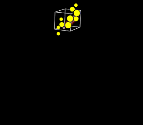
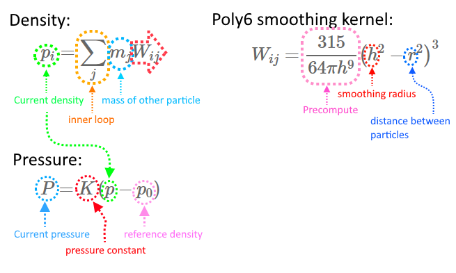
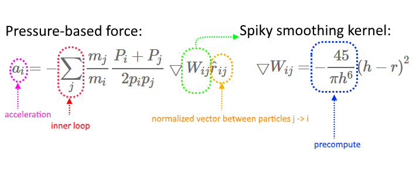
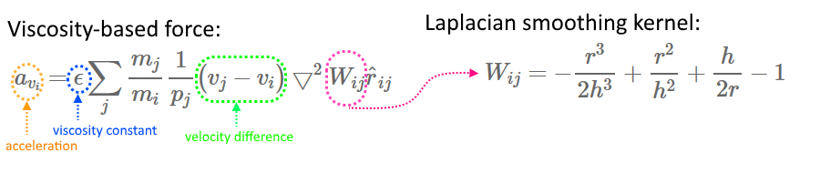
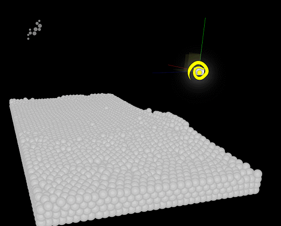
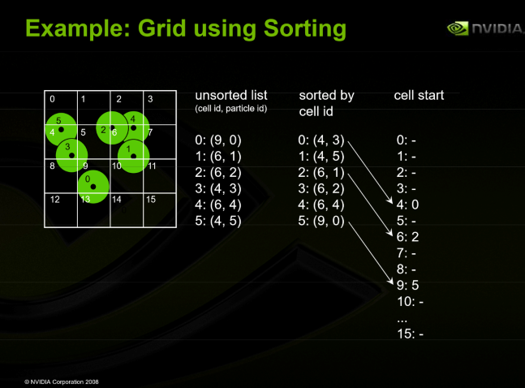
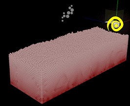

GPU Fluid Simulation
Let’s take a look at how to efficiently implement a particle based fluid simulation for real time rendering. We will be running a Smooth Particle Hydrodynamics (SPH) simulation on the GPU. This post is intended for experienced developers and provide the general steps of implementation. It is not a step-by step tutorial, but rather introducing algorithms, data structures, ideas and optimization tips. There are multiple parts I will write about: computing SPH, N-body simulation, dynamic hashed grid acceleration structure. You will find example code pieces here written as HLSL compute shaders.
To be able to implement a simulator like this, you should already have a basic particle simulation/rendering up and running on the GPU. Like this. Then the fluid simulation step can just be inserted between particle emission and particle integration phase. Everything should just work from this point. At the end of the article, you should be able to do this on a low end GPU in real time (30 000 particles, 80 FPS, GTX 1050):

Smooth Particle Hydrodynamics
As a starting point, let’s get familiar with SPH. You can probably already find several papers on the subject. I chose this short paper. I would like to skip the in-depth theory behind it here and focus on implementation instead to keep it as short as possible. The basic idea is that we are approximating fluid with particles, with a finite range of affection. Each particle can influence every particle inside its range (smoothing radius). To simulate affection forces for each particle, we will compute the following for each particle: density -> pressure -> pressure-based forces -> viscosity-based forces -> constant gravitational force. After we computed these forces, we can use the combined force value and perform integration of velocity and update particle positions. In the paper we can find the following formulas that we must implement as shader code (I highlited and annotated key areas):
- Density evaluation with Poly6 kernel smoothing function + pressure computation

- Let’s translate that into (pseudo-)code:
particleA.density = 0; // we will compute this (float) // Precompute part of Poly6 // this should be constant buffer value // h = smoothing radius parameter (float) (default = 1.0f) // h9 = pow(h, 9) // PI = 3.1415... const float Poly6_constant = (315.0f / (64.0f * PI * h9)); for(all particleB that is either near particleA or is particleA) { const float3 diff = particleA.position - particleB.position; const float r2 = dot(diff, diff); if(r2 < h2) // h2 = h*h { const float W = Poly6_constant * pow(h2 - r2, 3); particleA.density += particleB.mass * W; } } // avoid negative pressure by clamping density to reference value: particleA.density = max(p0, particleA.density); // Compute pressure: // K = pressure constant parameter (float) (default = 250.0f) // p0 = reference density param (float) (default = 1.0f) particleA.pressure = K * (particleA.density - p0); - particleA correspons to the particle we are evaluating, particleB is the particle which is affecting the current particle. In the formulas, particleA is the “i” iterator, particleB is the “j” iterator. I found that names like this are just better readable in code.
- The loop iteration is placeholder now, that will be addressed later how we should implement it.
- Note that we not only evaluate nearby particles, but the particle itself, too. This is essentially just omitting that check inside the loop which is checking if the particle is itself or not. Without this detail, the simulation will be jerkier because essentially we avoid contribution from the particle’s own mass.
- Note that we can avoid storing the pressure, because it can be computed from the particle itself. We can compute it before computing forces, instead of loading it, which will increase computation time but reduce memory access stalls.
- Let’s translate that into (pseudo-)code:
- Pressure-based force computation with Spiky kernel smoothing function

- Looks like this in code:
particleA.force1 = 0; // we will compute this (float3) // Precomputed part of Spiky kernel: // h6 = pow(h, 6); // again, it should be coming from constant buffer const float Spiky_constant = (-45 / (PI * h6)); for(all particleB that is near particleA but is not particleA) { const float3 diff = particleA.position - particleB.position; const float r2 = dot(diff, diff); const float r = sqrt(r2); if(r > 0 && r < h) // **avoid division by zero! { const float3 rNorm = diff / r; // same as normalize(diff) const float W = Spiky_constant * pow(h - r, 2); particleA.force1 += (particleB.mass / particleA.mass) * ((particleA.pressure + particleB.pressure) / (2 * particleA.density * particleB.density)) * W * rNorm; } } particleA.force1 *= -1; - Very important that unlike in the previous step, we must avoid computing the current particle against itself! The simulation immediately blows up if you don’t check!
- Looks like this in code:
- Viscosity-based force computation with Laplacian smoothing function

- In code:
particleA.force2 = 0; // we will compute this (float3) // Most of it is the same as the previous snippet, // only the innermost calculations will differ for(all particleB that is near particleA but is not particleA) { const float3 diff = particleA.position - particleB.position; const float r2 = dot(diff, diff); const float r = sqrt(r2); if(r > 0 && r < h) // **avoid division by zero! { const float3 rNorm = diff / r; const float r3 = r2 * r; const float W = -(r3 / (2 * h3)) + (r2 / h2) + (h / (2 * r)) - 1; particleA.force2 += (particleB.mass / particleA.mass) * (1.0f / particleB.density) * (particleB.velocity - particleA.velocity) * W * rNorm; } } // e = viscosity constant (float) (default = 0.018f) particleA.force2 *= e; - All of this should be combined with the pressure-based force computations, into the same loop!
- The viscosity constant will control how fluid our simulation is.
- In code:
- Forces integration
- Consists of following steps:
- Add force to velocity
- Step position along velocity vector
- Reset force
- Using fixed timestep so that simulation will not blow up
- This step must be separate from the SPH forces evaluation, because viscosity based force computation takes velocity into account, thus it cannot be modified while the forces are not computed yet!
- They say that a code piece can say a thousand words:
const float deltaTime = 0.016f; // fixed step const float3 G = float3(0, -9.8f, 0); particleA.velocity += deltaTime * ((particleA.force1 + particleA.force2) / particleA.density + G); particleA.position += deltaTime * particleA.velocity; particleA.force1 = 0; particleA.force2 = 0; - Of course, the particle should not be storing two distinct forces, they can be combined into one.
- Consists of following steps:
N-body simulation
N-body simulation stands for the simple algorithm of checking each particle against each other particle in the simulation. This is how we should implement SPH-based fluid simulation first for simplicity. This can be still done real time for a couple thousand particles on a GPU, so it is ideal for us to test out how the formulas work and find good default input values for the simulation. However, this algorithm has a complexity of O(n^2), so it will not scale well after a certain threshold. The SPH smoothing radius will give us opportunity to come up with a better algorithm to reduce complexity and make it scalable later. The first attempt to create an N-body simulation in compute shaders, would involve a double loop iterating through the particle list:
#define THREADCOUNT 256
[numthreads(THREADCOUNT, 1, 1)]
void main(uint3 dispatchThreadID : SV_DispatchThreadID)
{
Particle particleA = particleBuffer[dispatchThreadID.x];
for(uint i = 0; i < particleCount; ++i)
{
Particle particleB = particleBuffer[i];
resolveParticles(particleA, particleB);
}
}Well, not *really* a double loop, but the outer loop is the compute kernel itself. But there are already several problems with this. First, is that the SPH force computation needs intermediate results of particle densities, but our compute shader is running thread groups in parallel, so we can’t just combine both in the same shader, as we can’t be sure that all the densities are computed by the time we want to evaluate forces. So we are splitting the simulation into two shaders: density evaluation and force evaluation. (Pressure evaluation can be done immediately before force computation because it can be computed from density) So far we have two shaders, each doing O(n^2) particle evaluations, each loading from global memory. This just screams slow. I also experimented with using shared memory to preload particles ahead of time and reduce latency. You can skip this step if you want, because the acceleration structure later will be a complete replacement, but this is a good exercise nonetheless and increases performance of the N-body simulation:
#define THREADCOUNT 256
groupshared Particle sharedParticles[THREADCOUNT];
//...
Particle particleA = particleBuffer[dispatchThreadID.x];
uint numTiles = 1 + particleCount / THREADCOUNT;
for (uint tile = 0; tile < numTiles; ++tile)
{
uint offset = tile * THREADCOUNT;
sharedParticles[flattenedGroupIndex] = particleBuffer[offset + flattenedGroupIndex];
GroupMemoryBarrierWithGroupSync();
for(uint i = 0; i < THREADCOUNT; ++i)
{
Particle particleB = sharedParticles[i];
resolveParticles(particleA, particleB);
}
GroupMemoryBarrierWithGroupSync();
}Important to look out that we are doing thread sync operations inside a dynamic loop. You are not allowed to do this if the loop is potentially divergent across the thread group. To have it compile, ensure that the loop range is loaded from coherent memory such as constant buffer values or read only buffers. For example you can’t load particleCount from an unordered access view, because the loop termination depends on it and it can potentially be divergent across the thread group.
Obviously, it is a bit simplified, to be more readable. We eliminated a bunch of latency by avoiding accessing the main memory and using group shared memory instead. This is the general way to speed up N-body simulation. It should be already good (real time) for simple fluid simulations up to ~20000 particles on an average GPU. We still need to do it two times though, first for computing densities, then for forces.
So, with this implementation, our fluid simulation can be written as running two extra shaders before particle velocity integration:
- SPH Density evaluation
- SPH force computation
Pressure computation can either be in density evaluation phase and exported to memory/read back in force phase, or just computed in force phase. I chose to actually precompute it in the force phase, and store it into shared memory per “tile”.
So far we can simulate a moderate amount of particles in real time with N-body collisions (4000 particles):

Dynamic Hashed Grid
So, hopefully you have the fluid simulator up and running before coming to this part. 🙂 Let’s eliminate that nasty O(n^2) complexity! The very basic idea behind SPH is that there is a smoothing radius for each particle and only particles inside the smoothing radius should be affecting the current particle. If we subdivide space to a uniform grid, with a grid cell size of smoothing radius, and sort each particle into its corresponding cell, we can perform efficient constant lookups of smaller particle lists. Let’s say, that we have a particle somewhere. We can look up which grid cell it belongs to by taking its position, and dividing it by smoothing radius:
int3 cellIndex = floor(particleA.position / h);Then we have to evaluate all the particles inside that grid cell and all the direct neighbour cells as well. In a three dimension grid, those are 3*3*3 = 27 cells. There are some problems that come to mind immediately:
- We don’t want to just constrain the simulation to a finite grid, but we don’t have infinite memory
- We don’t know how many particles can be inside one cell at once. We don’t want to impose limitation, because that could affect simulation results.
- We can’t allocate memory with GPU code, so we will be using a fixed size pre-allocated pool.
- We will need to build this data structure entirely on the GPU.
Fortunately, all of these are solvable with the dynamic hashed grid algorithm!
The first part we should solve is that each cell can contain an unbounded number of particles (well, bounded to the maximum number of allowed particles per simulation). I took this idea from a GDC 2008 presentation by Nvidia. I needed some time to wrap my mind around it, so hopefully I can describe it so that it will be easier for you. It is called “sorted grid” and it is described like this:

It can be tricky to digest, let me explain. Let’s start from left to right. We have a picture and three columns. The picture of the grid shows that we have grid cells 4, 6 and 9 containing some particles. It can be represented by the unsorted list (first column). It can be built on the GPU by iterating through the particle list and each particle writes its grid cell index into a list. But it is not yet usable to perform a constant time lookup. The second column is the sorted list. It’s the previous list, only the particle index list is now sorted by grid cell index. It is good for us, because now if we iterate through the particle index list, the corresponding grid cell indices are continuously laid out in ascending order. But we need the ability to look up an arbitrary cell in constant time and have a continuous array of particle list which it contains. We are nearly there. As the last step, we can process this list and create an “offset list” for each grid cell. We will have an array of grid cells each holding either
- UINT32_MAX (0xFFFFFFFF) When the cell is empty
- integer value >= 0 indicating the offset into sorted particle list
With this information, we can now say everything about a particle when we iterate through them:
- Its corresponding grid cell
- The grid cell’s offset into the sorted list
- We know that the sorted list contains some number of particles in the same cell from the offset until we read a particle which is in an other cell.
As we can see, there is no need for memory allocation apart from the pre-allocation, so it is doable on the GPU. We should follows these steps:
- Create the unsorted listWe will be running a compute shader with the SV_DispatchThreadID indexing the particle index list, which indexes the main particle property buffer containing position, simulation properties, etc..We will have a cellIndexBuffer, which is the same size as the particle index buffer. It could also be a property of the particle structure, but this is better memory access pattern because it is only used in optional particle simulation path. Also, we can have a general purpose sorting shader more easily.
uint particleIndex = particleIndexBuffer[dispatchThreadID.x]; Particle particle = particleBuffer[particleIndex]; int3 cellIndex = floor(particle.position / h); uint flatCellIndex = GetFlatCellIndex(cellIndex); cellIndexBuffer[particleIndex] = flatCellIndex; - Create the sorted listRun a Bitonic Merge Sort Algorithm which performs comparisons on the cellIndexBuffer but swaps elements of the particleIndexBuffer. Bitonic sort is a well researched parallel sorting algorithm, and you can pull the implementation from AMD’s particle demo on GitHub.
- Create the offset listThe offset list will be recreated from scratch each frame, so first ensure that it is completely cleared to invalid offsets (0xFFFFFFFF).Then, we can exploit Atomic operations to efficiently compute the cell offsets. We will dispatch a compute shader that will read one particle index from SV_DispatchThreadID semantic. We can read the corresponding grid cell index or compute it. Loading is preferable here, because we can achieve better cache coherency by not loading position from the bloated particle buffer and converting it to cell index.The Atomic Min operation works because we have high values everywhere in the offset buffer initially, so we can store for each grid cell the minimum of all the threads that had a particle corresponding to that cell.
uint particleIndex = particleIndexBuffer[dispatchThreadID.x]; uint cellIndex = cellIndexBuffer[particleIndex]; InterlockedMin(cellOffsetBuffer[cellIndex], dispatchThreadID.x); - The structure is complete, all we have to do is iterate it!
Before going further, let’s address our remaining desire, that the grid should be “infinite”, not only constrained to a small area. This is a really simple extension, called hashing. The only thing that will change is the computation of the flat cell index. Let’s define the function
inline uint GetFlatCellIndex(in int3 cellIndex)
{
const uint p1 = 73856093; // some large primes
const uint p2 = 19349663;
const uint p3 = 83492791;
int n = p1 * cellIndex.x ^ p2*cellIndex.y ^ p3*cellIndex.z;
n %= TOTAL_GRID_CELL_COUNT;
return n;
}The rest of the algorithm is unchanged, just ensure that wherever looking up a grid cell, we have to use the same function. Also, the choice of prime numbers and grid cell count should have a big impact on the efficiency of the hashing (because of hash collisions, multiple world positions can index the same physical cell), so we should tune this to our needs.
All that’s left now is iterating this structure to resolve the SPH simulation. It will be traversed two times, first for density evaluation, then for force computation. But the iteration itself is the same in both cases:
int3 cellIndex = floor(particleA.position / h);
for(int i = -1; i <= 1; ++i)
{
for(int j = -1; j <= 1; ++j)
{
for(int k = -1; k <= 1; ++k)
{
int3 neighborIndex = cellIndex + int3(i, j, k);
uint flatNeighborIndex = GetFlatCellIndex(neighborIndex);
// look up the offset to the cell:
uint neighborIterator = cellOffsetBuffer[flatNeighborIndex];
// iterate through particles in the neighbour cell (if iterator offset is valid)
while(neighborIterator != 0xFFFFFFFF && neighborIterator < particleCount)
{
uint particleIndexB = particleIndexBuffer[neighborIterator];
if(cellIndexBuffer[particleIndexB] != flatNeighborIndex)
{
break; // it means we stepped out of the neighbour cell list!
}
// Here you can load particleB and do the SPH evaluation logic
neighborIterator++; // iterate...
}
}
}
}This is it. It might be a good idea to eliminate the triple loop with a lookup table (but don’t unroll!). But it is better visualized like this for simplicity/code size. This will yield us a huge performance gain and we are able to simulate 100 000 particles on a low end GPU in real time ~30 FPS:

Apart from particle collision, at least for debug purposes, it is a good idea to implement planar collisions, just to keep the simulation in bounds to test how it can fill out a volume. Planar collision is simple, if a particle would go behind a plane, clamp its position and invert the particle velocity based on the plane reflection vector. Apart from that, we can implement rigid collisions with unsimulated particles (for example driven by animation system). But that is out of scope for today.
As with any technique, there are multiple possibilities to further optimize. I will not cover hardware level GPU optimizations here because I have not yet researched this area thoroughly for this and it is already a long article. My general direction would be first to profile for any obvious bottlenecks. Without doing so, I imagine that memory latency could be improved by using shared memory somehow for the grid based lookups. It is not trivial anymore like with N-body simulation, because the thread group can span arbitrary amount of different grid cells at once. Apart from that, we should always aim to stay in cache wherever we can, so deinterleaving certain less frequently used particle properties might be a good idea. Also, watch out for bank conflicts when writing to (shared) memory, you can do so by aligning your data to bank size, and interleave certain frequently used together properties together into a structure. Can we use wave intrinsics to speed up certain parts of the simulation? I have some ideas I still haven’t tested out.
You can see that there is more room for additional optimizations and I still haven’t talked about rendering the fluid. These are very good candidates for other blog posts in the future, so stay tuned!
As always, you are free to pull my implementation from my open source engine:
- Particle system CPU code part
- SPH Density evaluation shader
- SPH force evaluation shader
- Integration shader
- Unsorted grid creation shader
- GPU Sort lib
- Sorted grid offsets creation shader
Also, my older article describes a general purpose GPU particle system which is a good candidate to fit a fluid simulator into. Or just to implement a cool large-scale particle system.
If you find any mistakes or have any questions, let me know in the comments!
UPDATE: There was a divide by zero bug, which is now fixed. In the force computation step, we must check if the distance between two particles is greater than zero, otherwise avoid computing the SPH forces between those two particles. It sometimes manifested as a flickering anomaly that looked more like a synchronization issue. Sorry for the inconvenience! I marked occurences in code samples with **